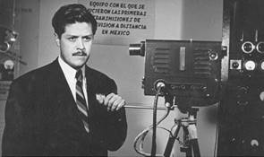
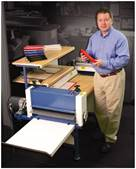
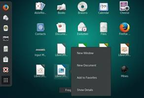
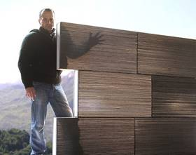
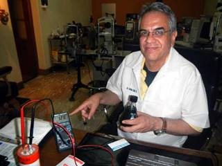
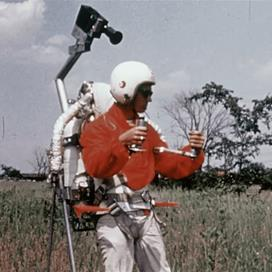

En este espacio redactamos algunos de los inventos de algunos nos mexicanos, algunos más que nacieron en Estados Unidos, pero son hijos de mexicanos, con ganas de emprender en la vida viendo oportunidades de avanzar.
Tv a color (1939) El ingeniero Guillermo González Camarena, uno de los más grandes inventores mexicanos, creó una televisión a color que fue patentada en EU y México, invento que revolucionó la manera de ver la televisión, pasando de solo dos tonos (blanco y negro) a una gama de tonalidades. |

|
Book on Demand (1977) El famoso libro por pedido, es una tecnología creada y patentada en diferentes países, como Estatos Unidos, China y México por el escritor e inventor mexicano Victor Celorio. Instabook es el nombre con el que fue bautizada la empresa en donde los usuarios pueden descargar, imprimir y empastar un libro en poco tiempo. |

|
Mousepad (1979) Cuando se implementó el uso del mouse en una computadora hacía falta un aditamento para poder desplazar el cursor más fácilmente. Por ello, diez años después de que su uso se hiciera masivo, el mexicano Armando Fernández, quien trabajaba para la compañía Xerox. |
|
|
GNOME (1997) El proyecto desarrollado por Miguel de Icaza y Federico Mena (GNU Network Object Model Environment) era una interfaz gráfica libre, intuitiva, amigable y simple para correr en Linux, que surgió como una alternativa para los entornos gráficos de la época. |
 |
Concreto translúcido (2005) Este material polimérico diseñado por ingenieros mexicanos posee la característica de ser casi transparente, permitiendo el paso de la luz para generar un ahorro de energía al usar menos focos ya que se puede usar luz natural para iluminar una casa. Joel Sosa Gutiérrez y Sergio Galván Cáceres son los inventores, quienes utilizaron cemento, agregados y aditivos para crearlo. |

|
Bat-Gen (2010) Este dispositivo fue diseñado por el oftalmólogo Arturo Solís Herrera, egresado de la UNAM. Se trata de una batería cuya carga de energía puede durar hasta 100 años. Funciona mediante un sistema cíclico basado en la interacción entre una molécula de melanina, presente en el cabello, uñas, retina, piel, entre otras zonas del cuerpo humano, y una de agua. |

|
Rocket Belt (2005) Juan Manuel Lozano Gallegos, científico egresado de la UNAM, fue el diseñador de la tercera generación del “cinturón volador”, un dispositivo que emplea tanques de peróxido de hidrógeno que al hacer combustión generan una propulsión capaz de hacer “volar ” a cualquier persona. |

|